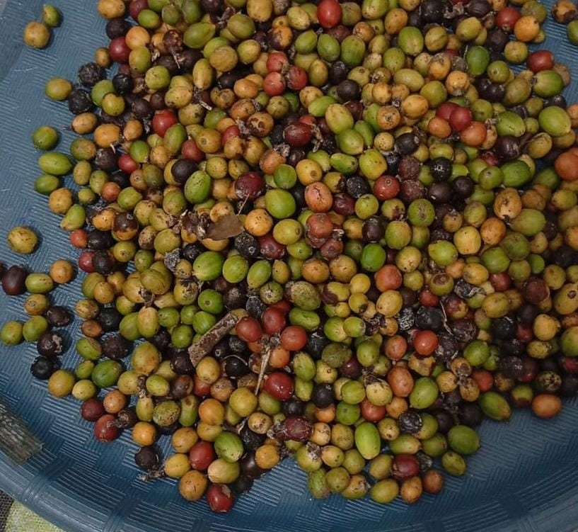

Kondisi nyata
Kopi digemari berbagai kalangan di seluruh dunia dan banyak dikonsumsi di Indonesia. Lampung berpeluang besar: lahan perkebunan luas, produksi tinggi, dan robusta yang dikenal di pasar nasional maupun internasional.
Permasalahan
Fermentasi membantu melepaskan lapisan lendir, menghasilkan aroma khas, dan mengurangi kafein pada robusta, tetapi metode ini masih jarang digunakan.
Gagasan solusi
Meneliti lama fermentasi buah kopi dan pengaruhnya terhadap karakteristik seduhan: rasa, aroma, dan warna.

Gambar 1. Buah kopi sebagai bahan penelitian